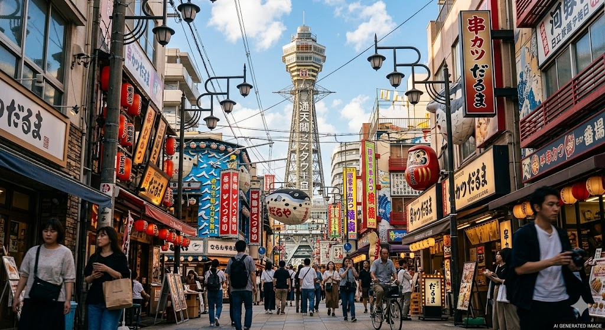

AI 生成意境圖📜 歷史與文化意義
通天閣位於大阪浪速區的「新世界」地區，這座名字意為「直通天空的高大建築物」的塔，最早建於 1912 年。現在我們看到的則是 1956 年重建的第二代通天閣。它不僅是大阪歷史的見證者，更是當地庶民文化的象徵。
這裡所在的「新世界」區域充滿了濃厚的懷舊氣息，街道兩旁掛滿了誇張的大型看板。通天閣與周圍繁華的商店街，完美呈現了大阪最真實、熱情且粗獷的一面，是攝影愛好者捕捉日本昭和時代風格的絕佳景點。
✨ 參觀三大不容錯過亮點
- 幸運之神「Billiken」像： 展望台內供奉著一尊獨特的福神像「Billiken」。據說摸摸它的腳底，就能為自己帶來好運與財富，來到此處請務必親自感受這股靈驗的能量。
- 刺激的懸空透明觀景台： 通天閣頂部設有延伸出去的透明觀景區域「TIP THE TSUTENKAKU」，站在這裡可以透過玻璃地板直接俯瞰地面，感受極高空的視覺衝擊。
- 新世界美食區： 塔下方的商店街是「串炸（Kushikatsu）」的發源地。各式各樣的食材裹粉油炸後沾上特製醬汁，搭配冰涼的啤酒，是在地人最推薦的通天閣標配行程。
💡 旅遊小貼士
通天閣的夜景與白天截然不同，霓虹燈亮起後的復古氛圍更加濃厚。建議安排在傍晚前來，先在展望台眺望市區，隨後下樓在充滿煙火氣的商店街享用晚餐。這裡步行至天王寺動物園或阿倍野 Harukas 也很近，可以規劃一場「新舊大阪文化巡禮」。